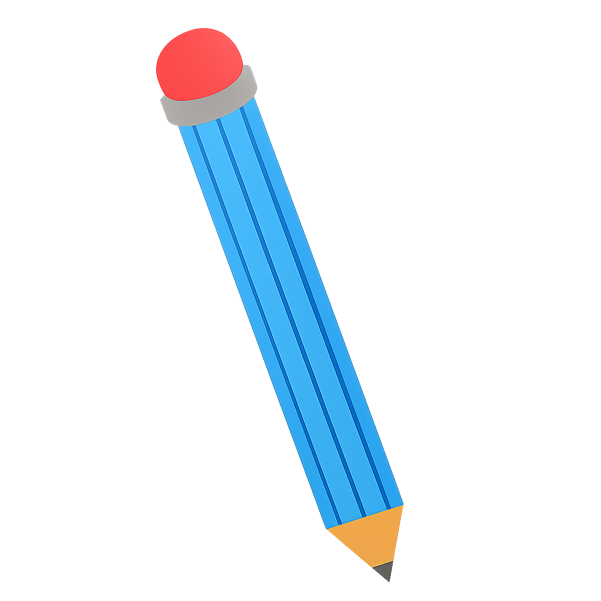

 Professora Karyn
Aulas
Projetos
Karyn Coelho
Profª | Pedagoga | Neuropsicopedagoga
Sobre Mim
Sou professora uma professora...
Interesses
Metodologias Ativas
Educação Inclusiva
Neuropsicopedagogia
Formação
Graduação: Licenciatura Plena de Pedagogia
Pós-graduada em Neuropsicopedagogia Clínica e Institucional
 14.57.00_a71a9947.jpg)